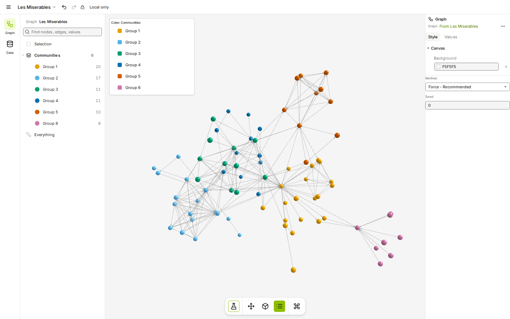
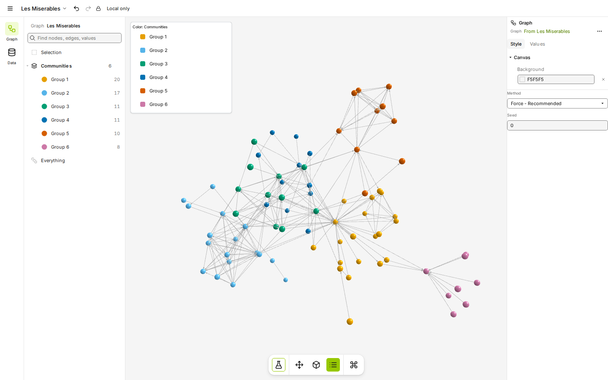
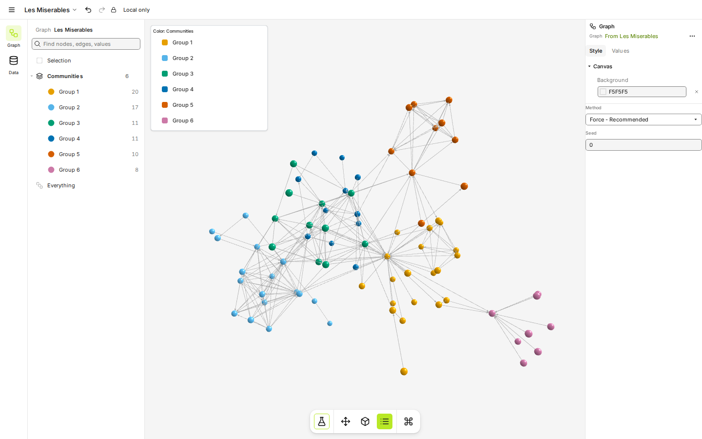
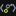

graphty logo, round 8: how bright on white, the heart, and the circle
Brand color is settled: lime + ink. Labels to reply with: the green on white (G-W4G-W5G-W6G-W7G-W8G-W9), the heart in the Cytoscape co-brand (H1H2H3) and the circle (N1N2N3). On dark the green is always the bright lime #c4f23a.
1. Brighter greens on white
Six greens from today's #8fbf00 up to the on-black lime #c4f23a, each used as the node color on white, on black and on ink. Contrast is the WCAG ratio; a graphic should reach 3:1, text 4.5:1. Every green passes easily on black and ink, so only the white column decides. The favicons are the real 16 and 32 px renders (the "x4" tile is the 16 px render blown up with hard pixels). On the dark tiles the green shown is the same hex, so you can see each one on black too; the plan stays #c4f23a on dark.
G-W4#8fbf00 (current pick)
white 2.18:1 · black 9.62:1 · ink 5.99:1
Today's pick. The node reads as a solid green dot on white, clearly weaker than the ink rings but present at 16 px. 2.18:1 is under the 3:1 guideline for graphics (logos are exempt).


G-W5#97c800
white 1.99:1 · black 10.58:1 · ink 6.58:1
A small step brighter. Still a solid green on white and still holds at 16 px; side by side with G-W4 the difference is slight.
G-W6#a2d400
white 1.76:1 · black 11.95:1 · ink 7.44:1
Visibly more yellow-lime and livelier. The node starts to look lighter than the rings; fine at 32 px, softer at 16 px.
G-W7#aedf10
white 1.57:1 · black 13.36:1 · ink 8.31:1
Where it starts to wash out: on white the node is pale and the ink rings carry the mark. At 16 px the dot is still there, but pale yellow-green rather than green.
G-W8#b8e826
white 1.44:1 · black 14.61:1 · ink 9.09:1
Washed out on white: the dot reads as a light highlight, not a color. Visible on a white tab, but on a light gray tab bar it would be very faint.
G-W9#c4f23a (the on-black green)
white 1.3:1 · black 16.11:1 · ink 10.02:1
The same green as on black: one value everywhere. On white it is the faintest: the dot survives at 16 px only as a pale lime fleck next to the ink.


Reading the row. Going brighter buys energy at the cost of the node on white. G-W5 is the safe "a bit brighter"; G-W6 is the brightest that still reads as a dot at 16 px; from G-W7 up the ink rings carry the mark on white and the node turns into a pale fleck. G-W9 gives one green everywhere, at the cost of the faintest node on white.
2. Each green as the app's accent
The real graphty app with Les Miserables open and Louvain run. The light theme uses each green for filled buttons (with dark labels, since white on any of these greens fails), the active tool, icons and selection edges; brand text such as links stays the olive #588300 so it stays readable. The dark theme is the same for every option (bright lime #c4f23a with dark labels), so it is shown once. Click any screen for full size.
Dark theme (every option)


Light theme: workspace








Light theme: Analyze menu, pointer on PageRank


Light theme: Settings (Done is a filled button)


In the app the green only lands on small things: filled buttons, the active tool, focus and selection edges. Those are where a lighter green costs most, because a 1.5:1 edge on white is hard to see. Buttons stay readable at every step thanks to the dark label.
3. The whole kit with N1, N2 and N3
N1 the color on the ear node (top right). N2 on the middle ring. N3 on the bottom ring. Each column is the same kit in lime + ink, with G-W4 on white and bright lime on dark: the mark large and at 16 and 32 px, the mark with the wordmark, every child brand, and the Cytoscape co-brand (K2) with each heart.
The heart. Three reds and pinks that sit apart from lime and ink:
#e8304f rose red: white 4.23:1, dark 4.47:1H2#ff4f8b hot pink: white 3.11:1, dark 6.06:1H3#e02424 true red: white 4.72:1, dark 4:1H1 sits halfway between red and pink and is the most balanced beside lime (lime and rose are near complements, so neither muddies the other). H2 is the friendliest and closest to the old pink, and the lightest on white. H3 is a plain red: the clearest "love" signal, but it can read as an error color in an app.
N1ear node


H1
H2
H3


H1
H2
H3
N2middle ring
H1
H2
H3
H1
H2
H3
N3bottom ring
H1
H2
H3

H1
H2
H3
Team view: N1, as in rounds 5 to 7. With the lime it matters more than before: N1 colors one small solid dot, so a light green costs little; N2 and N3 color a whole ring, so on white the ring goes pale (G-W4's 2.18:1) and the g loses part of its letter shape. On dark, N2 is the most striking.
What is left for you
- The green on white: G-W4 (today), or brighter: G-W5, G-W6, G-W7, G-W8, or G-W9 (the on-black green, one value everywhere).
- The heart in the Cytoscape co-brand: H1 rose red (team pick), H2 hot pink or H3 true red.
- The circle: N1 (team pick), N2 or N3.